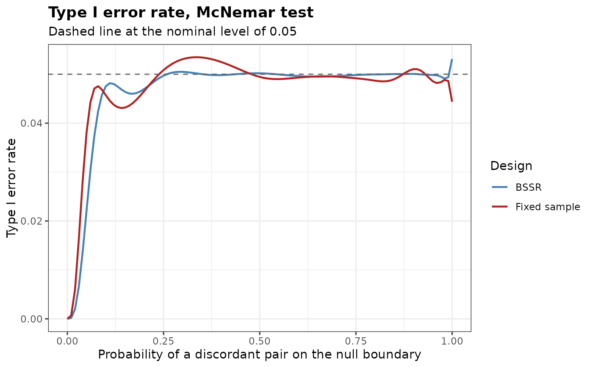

Type I Error Rate of Blinded Sample Size Re-Estimation for Paired Binary Data
Source:R/PairedTypeIErrorBSSR.R
PairedTypeIErrorBSSR.RdCalculates the exact type I error rate of a matched-pairs design with blinded sample size re-estimation, and of the fixed design with the planned number of pairs, over the probability of a discordant pair on the boundary of the null hypothesis, together with the largest rate.
Usage
PairedTypeIErrorBSSR(
Delta.A,
N,
omega = NULL,
alpha,
tar.power,
Test,
restricted = FALSE,
alternative = c("greater", "less", "two.sided", "equivalence"),
n.grid = 100,
bb.gamma = 0,
ss.method = c("exact", "standard", "conditional.power"),
ss.Test = Test,
ss.alpha = alpha,
search = c("crossing", "smallest", "stable"),
search.limit = c(2, 50),
N.min = NULL,
N.max = NULL,
n.interim = NULL,
psi = seq(0, 1, by = 0.01),
maximize = c("certified", "refined", "grid"),
margin = 0,
ref.pvalue = FALSE
)Arguments
- Delta.A
Assumed difference
p10 - p01used in the re-estimation- N
Planned number of pairs, which is the number of pairs of the fixed design
- omega
Fraction of
Nat the interim analysis, rounded up. Supply eitheromegaorn.interim- alpha
Level of significance for the alternative specified by
alternative- tar.power
Target power of the re-estimation
- Test
Type of statistical test. Options:
'McNemar','McNemar-exact','McNemar-midP','McNemar-uncond'or'Paired-Score'- restricted
Logical. If
TRUE, the final number of pairs is at leastN. Default isFALSE- alternative
Direction of the alternative hypothesis. Options:
'greater'(default) forp10 - p01 > -margin,'less'forp10 - p01 < margin,'two.sided'forp10 != p01, or'equivalence'for-lower < p10 - p01 < upper- n.grid
Number of grid points used to search over the probability of a discordant pair in the test
'McNemar-uncond'. Default is 100- bb.gamma
Confidence level parameter of the Berger-Boos procedure for the test
'McNemar-uncond'. The default of 0 disables the procedure- ss.method
Re-estimation rule.
'exact'(default) and'standard're-estimate the number of pairs ofPairedSampleSizewith the method of that name.'conditional.power'takes the smallest number of pairs at which the conditional power given the interim number of discordant pairs attainstar.power, the rule of Schepers et al. (2026); it requiresN.max. See Details- ss.Test
Test used in the re-estimation. Default is
Test- ss.alpha
Level used in the re-estimation. Default is
alpha- search
Search of the exact re-estimation, see
PairedSampleSize- search.limit
Limit of the search
'stable', seePairedSampleSize- N.min
Smallest final number of pairs, or
NULL- N.max
Largest final number of pairs, or
NULL- n.interim
Number of pairs at the interim analysis. Supply either
omegaorn.interim- psi
Values of the probability
p10 + p01of a discordant pair at which the rate is evaluated. Values that do not lie on the boundary of the null hypothesis, below|margin|, are dropped. Default isseq(0, 1, by = 0.01)- maximize
How the largest rate is found.
'certified'(default) takes the largest value on the grid and certifies the maximum over the interval spanned by the grid with an upper bound,'refined'refines the largest values on the grid between neighbouring grid points, and'grid'takes the largest value on the grid. See Details- margin
Margin on the scale of the difference
p10 - p01. The default of 0 gives a test of superiority, and a value other than 0 tests the null hypothesisp10 - p01 <= -marginagainstp10 - p01 > -marginwhenalternativeis'greater', andp10 - p01 >= marginagainstp10 - p01 < marginwhen it is'less'. A negative value tests for superiority by more than its absolute value. A margin other than 0 requiresTest = 'Paired-Score'and a one-sided alternative. Foralternative = 'equivalence'the margin is the pairc(lower, upper), both in (0, 1), or a single value used for both, and the null hypothesisp10 - p01 <= -lowerorp10 - p01 >= upperis tested- ref.pvalue
Logical. If
TRUE, the maximization over the probability of a discordant pair in the test'McNemar-uncond'is refined between the grid points, see Details. Default isFALSE
Value
An object of class bbssr_ptie, a data frame with one row for each value
of psi on the boundary, containing psi, the probabilities p10
and p01 on the boundary, and the rates TIE.BSSR of the design with
re-estimation and TIE.TRAD of the fixed design. For a test of equivalence the
rates on the two boundaries are stacked, with the column boundary. The
attribute max holds the largest rates TIE of both designs, the values
psi at which they occur, the upper bounds bound of the certified
maximization (otherwise NA) and, for a test of equivalence, the boundary.
The attribute reestimation holds the final number of pairs for every interim
number of discordant pairs, and the other attributes the design settings.
Details
The type I error rate is evaluated on the boundary p10 - p01 = d0 of the null
hypothesis, with d0 = 0 for a test of superiority, d0 = -margin for
alternative = 'greater' and d0 = margin for 'less', as for two
independent groups. For a fixed design, Berger and Sidik (2003, Theorem 1) show that the
largest rate over the null hypothesis of superiority lies on this boundary for rejection
regions that are Barnard convex. A test of equivalence has two boundaries,
-lower and upper, and the largest rate is the larger of the maxima on the
two.
On a boundary the rejection probability is a polynomial in psi: given the
numbers of discordant pairs, the number of pairs in which only treatment 1 responds is
binomial with probability p10 / psi, which is fixed on the boundary up to the
linear reparametrization of paired_boundary, and the re-estimation depends on the
interim data only through the number of discordant pairs. The probability is computed
exactly. With maximize = 'certified' the Bernstein coefficients of the
polynomial over the interval spanned by the values of psi on the boundary are
bounded by subdivision, as in BinaryTypeIErrorBSSR, which gives an upper
bound of the largest rate over the interval within 1e-12 of the maximum found.
The exact conditional McNemar test keeps its level whatever blinded rule is used
(Schepers et al., 2026), so its largest rate does not exceed alpha.
References
Berger RL, Sidik K (2003). Exact unconditional tests for a 2 x 2 matched-pairs design. Statistical Methods in Medical Research, 12(2), 91-108.
Schepers M, Brannath W, Hoffmann E, Stingl J, Schmidtmann I (2026). Blinded sample size review for McNemar's test based on primary and surrogate endpoints. arXiv:2608.17784.
Examples
tie <- PairedTypeIErrorBSSR(Delta.A = 0.15, N = 72, n.interim = 30, alpha = 0.05,
tar.power = 0.8, Test = 'McNemar',
alternative = 'two.sided', ss.method = 'standard')
print(tie)
#> Type I error rate of blinded sample size re-estimation for paired binary data
#>
#> Test : McNemar
#> Alternative : two.sided
#> Pairs : N = 72 planned, 30 at the interim analysis
#> Assumed effect : 0.15
#> Nominal level : 0.05
#> Grid : 101 values of psi in [0, 1]
#> Maximum : certified over psi in [0, 1]
#>
#> Largest type I error rate
#> Design psi TIE
#> BSSR 1.000000 0.05313
#> Fixed sample 0.335197 0.05348
# \donttest{
plot(tie)

# }